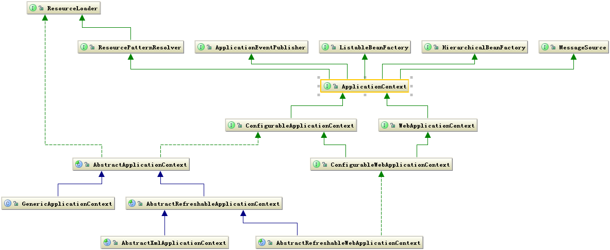

深度剖析Spring（一） 体系结构
前言
Spring作为一个轻量级的Java开发框架，简化了Java应用开发的复杂性，减少了代码的耦合度。不过在初次接触Spring的时候，对于各种配置文件，还是有点头疼，甚至觉得复杂化了开发过程。不过在学到后面的时候，发现Spring还是挺好用的。Spring同时也是一个工具，一个大部分开发者都喜欢的工具。所以在掌握其使用方法的同时，了解其设计理念，其源码实现，对于开发也是有好处的。
参考文章:
https://www.ibm.com/developerworks/cn/java/j-lo-spring-principle/
http://cmsblogs.com/?p=2652
设计理念
Spring的设计类似于Java面向对象理念，管理的对象就是我们所定义的bean。所以Bean在Spring中起到很大的作用，我们所定义的对象，由Spring包装成自己的Bean对象进行管理。同时为我们提供了一个存放对象的容器，这个容器便是管理Bean对象的，需要对象时我们可以在容器中取。同时在该容器中，Spring会建立其之间的依赖关系，也就是所谓的依赖注入。
引用一段参考文章中的原文，大致讲了Bean的重要性和spring理念。
Bean 在 Spring 中作用就像 Object 对 OOP 的意义一样，没有对象的概念就像没有面向对象编程，Spring 中没有 Bean 也就没有 Spring 存在的意义。就像一次演出舞台都准备好了但是却没有演员一样。为什么要 Bean 这种角色 Bean 或者为何在 Spring 如此重要，这由 Spring 框架的设计目标决定，Spring 为何如此流行，我们用 Spring 的原因是什么，想想你会发现原来 Spring 解决了一个非常关键的问题他可以让你把对象之间的依赖关系转而用配置文件来管理，也就是他的依赖注入机制。而这个注入关系在一个叫 Ioc 容器中管理，那 Ioc 容器就是被 Bean 包裹的对象。Spring 正是通过把对象包装在 Bean 中而达到对这些对象的管理以及一些列额外操作的目的。
控制反转（IOC）
现在我们知道在Spring中最重要的是Bean，那么谁负责管理这些Bean，以及如何管理这些Bean呢？这就不得不提到IOC了，IOC全称 Inversion of Control ，译为“ 控制反转 ”，关于IOC的详解 。面向对象开发应用，一般是几个类进行合作，从而完成工作(如在Service类中需要一个Dao类来进行数据存取)，这样这几个类就形成了依赖关系。如果合作的类过多，其代码中自然会有许多显式的构造对象代码，也就产生了大量耦合。因此采用第三方来进行对象依赖管理进行解耦，那这个第三方也就是IOC。所谓反转也是因为有了IOC，曾经需要显式new的对象，现在只需要被动接受就可以了，因此意为：控制反转。
核心组件
弄清除何为控制反转之后，我们再来了解下一个问题:Spring是通过什么来完成控制反转的？
Spring提供了若干组件来支持用户开发工作，其中最为核心的是：Core,Context,Beans。由他们组成核心骨骼，其余的特性功能如AOP，Web都在其核心之上。这里的组件也就是Spring提供的相关Jar包，来完成所需工作。
Beans组件
Beans组件主要负责Bean的定义、创建、解析。对于使用者而言只需要关注Bean如何定义，而创建和解析由Spring来完成。
Bean定义，BeanDefinition体系，描述Spring中的Bean对象，是Spring中基本的数据结构，封装了用户定义的object和别名等信息，后续的创建和解析都和Bean定义息息相关。
AttributeAccessor 定义用于附加和访问元数据的通用的接口
BeanMetadataElement 提供了一个getResource()方法,用来传输一个可配置的源对象
AbstractBeanDefinition 保存bean的相关设置属性
RootBeanDefinition 表明它是一个可合并的bean definition：即在spring beanFactory运行期间，可以返回一个特定的bean
Bean解析，BeanDefinitionReader体系，解析Spring配置文件，将其转换为Spring的内部数据结构BeanDefinition。
BeanDefinitionReader 指定了加载方法
EnvironmentCapable 通过getEnvironment方法取得与此组件相关联的环境，用于类型检测
AbstractDefinitionReader 提供常用属性，例如要处理的bean工厂和用于加载bean类的类加载器
XmlBeanDefinitionReader 加载xml中的bean定义
PropertiesBeanDefinitionReader 加载属性文件bean定义
GroovyBeanDefinitionReader 支持Groovy 定义文件（Groovy是基于JVM的开发语言）
bean创建，BeanFactory体系，纯粹的Bean容器，维护着一个DefinitionMap对象，根据Definition的描述进行Bean的管理和创建
BeanFactory 用于访问Spring bean容器的顶级接口，基础容器
ListableBeanFactory 表示bean是可列表的
HierarchicalBeanFactory 表示bean之间存在继承分层关系
AutowireCapableBeanFactory 定义Bean的自动装配规则SingletonBEanRegistry 定义单例类注册的方法
ConfigurableBeanFactory 继承了分层和单例类注册的功能
ConfigurableListableBeanFactory 分层列表可自动装配
DefaultListableBeanFactory 最终默认实现类
在这个体系里面,每个高层接口的功能都比较单一化的,在逐步的继承中,通过合并多个接口再组合成复杂功能的接口。之所以定义这么多接口,是为了区分在Spring内部对象的传递和转化中,对对象的数据访问做限制,使得每个接口有特定的使用场合
大致关系为：使用者编写Spring配置文件（定义Bean和其依赖关系），由BeanDefinitionReader解析配置文件，将其中的Bean定义（<bean>）转换为BeanDefinition类，然后交由BeanFactory来管理。
Core组件
发现、建立、维护每个Bean之间的关系所需的一系列工具。其中包含了很多关键类，有一个重要的组成部分便是资源的获取方式。
资源Resource体系，它的每一个类都代表了对一种资源的封装，对使用者而言，消除了不同资源类型的差异。对资源提供者而言,InputStreamSource接口中有一个getInputStream ,返回该资源的InputStream便可.
InputStreamSource 定义getInputStream()方法获取资源的inputStream
Resource 资源描述接口
AbstractResource 实现部分预处理方法,如: 判断资源是否存在
contextResource 从应用上下文容器获取资源的接口
其余各种具体资源
资源加载ResourceLoader，对之前的封装的资源提供加载机制。
ResourceLoader 资源获取接口,获取类类加载器或资源(Resource)
DefaultResourceLoader 默认实现
ResourcePatternResolver 路径匹配解析
具体实现类
在这里我们可以了解到,Spring对资源文件的管理,类似于一种外观模式,提供了一个资源接口,具体如何获得资源,由子类实现.
context组件
这个就是我们使用Spring时定义的ApplicationContext，其提供一个运行时环境，记录各个对象的运行状态。同时也继承了Bean组件和core组件部分功能，三个组件一起构成Spring核心。

从上图可以看出，Context 是把资源的加载、解析和描述工作委托给了 ResourcePatternResolver 类来完成，他相当于一个接头人，他把资源的加载、解析和资源的定义整合在一起便于其他组件使用。同时继承了 BeanFactory, 也说明Spring 容器中运行的主体对象是 Bean.
- pplicationContext 的子类主要包含两个方面：
- ConfigurableApplicationContext 表示该 Context 是可修改的，也就是在构建 Context 中用户可以动态添加或修改已有的配置信息，它下面又有多个子类，其中最经常使用的是可更新的 Context，即 AbstractRefreshableApplicationContext 类。
- WebApplicationContext 顾名思义，就是为 web 准备的 Context 他可以直接访问到 ServletContext，通常情况下，这个接口使用的少。
再往下分就是按照构建 Context 的文件类型，接着就是访问 Context 的方式。这样一级一级构成了完整的 Context 等级层次。
总结
通过了解Spring的设计理念与三个核心组件,需要明白以下几个问题:
1.Spring的设计理念
面向对象,简化开发复杂性,减少代码耦合度.
2.Spring基础功能IOC是什么
控制反转,利用第三方(IOC)管理多个类的依赖关系.由主动获取变成被动接受
3.三大核心组件是什么
- Beans: bean的定义(数据结构Definition) , 创建(BeanFactory), 解析(BeanDefinitionReader). 用户定义bean配置文件, 由Spring解析成bean的数据结构,由BeanFactory进行管理.
- Core: 提供很多工具类,重要的有资源封装(Resource)和资源获取(ResourceLoader).
- Context: 应用上下文,运行时环境,整合三大核心组件为用户提供服务.
这里只是了解部分简单的Spring核心功能,从简单了来说,就是读取配置文件到Map里面,然后我们去Map取. 往复杂了说,需要考虑各种扩展灵活性,因此还需要对spring进一步了解.